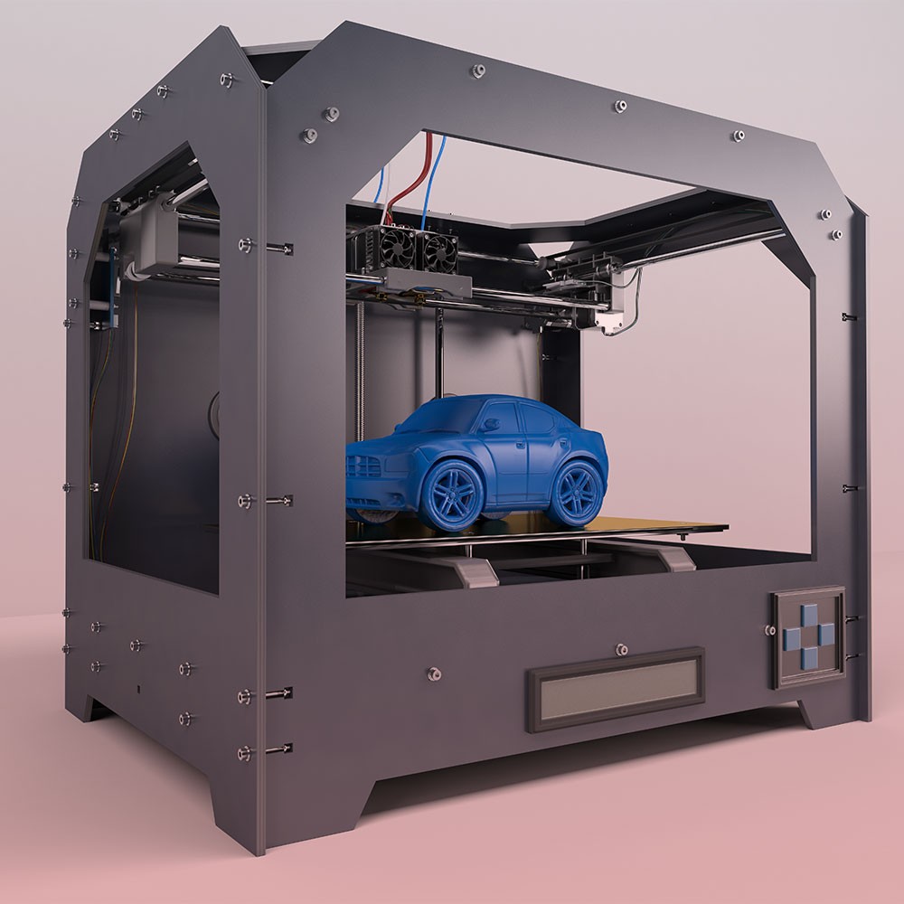

TECNOLOGIA
¿Impresión 3D de coches? Es la promesa de una nueva aleación de acero
La impresión 3D ha tenido mejor acogida en proyectos a pequeña escala que en grandes entornos industriales. Aspectos como la lentitud del proceso o la dificultad de obtener acabados regulares han impedido una adopción masiva, aunque hay sectores como la construcción donde los resultados ya son tangibles. Gracias a los últimos avances tecnológicos, parece que habrá otros sectores que se beneficien de la tecnología. En este caso, se trata de la automoción y de una nueva aleación de acero destinada a la impresión 3D.
Una novedosa tecnología para la impresión 3D de vehículos
Las factorías de Tesla llevan un tiempo aplicando a sus vehículos la técnica que sirve para producir coches de juguete. Es decir, la utilización de metales fundidos en un molde gigante. Se trata de una máquina, conocida como Giga Press, que pesa nueve mil toneladas y que reduce sensiblemente el número de piezas necesarias en la fabricación del chasis. Eso sí, para acelerar el proceso se requieren sistemas de enfriamiento del metal y la utilización de gases inertes para obtener resultados homogéneos. Hasta ahora, las piezas tienen un peso máximo de cincuenta kilos. Pero ¿y si se utilizara una impresión 3D aditiva?
Ese fue el planteamiento que impulsó a dos jóvenes estudiantes del MIT a acometer un nuevo proyecto en colaboración con un asesor de la Universidad de Paderborn en Alemania para imprimir con acero. El resultado les ha granjeado un premio en el concurso de diseño de la ASM Education Foundation 2022.
Basándose en un sistema de cálculo de propiedades de materiales llamado CALPHAD, los investigadores lograron formular una nueva aleación de acero que reuniese las características idóneas. Tras fundirlo y atomizarlo en gotas, estas se solidificaron y formaron el polvo utilizado como materia prima. Ahora bastaba con ir depositando capas de polvo de acero y fundirlo con un láser.
La ventaja del uso de impresión 3D es que el material se enfría mucho más rápidamente y se mejora la calidad de los resultados, además de ofrecer la impresión de piezas más complejas. La nueva aleación ya se ha patentado y es posible que empiece a utilizarse pronto en la fabricación de vehículos eléctricos más sostenibles.
